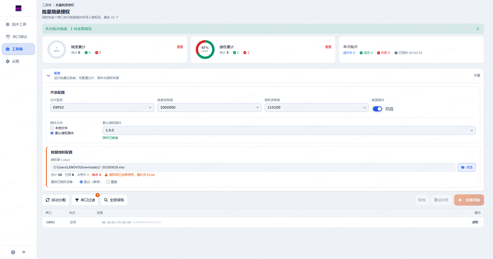
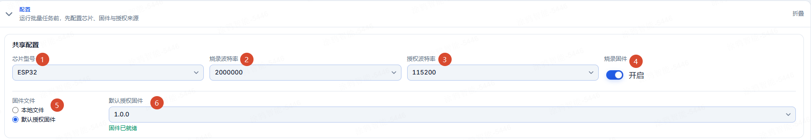
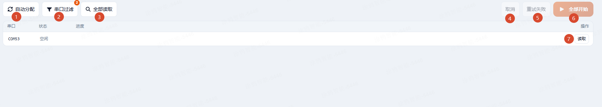
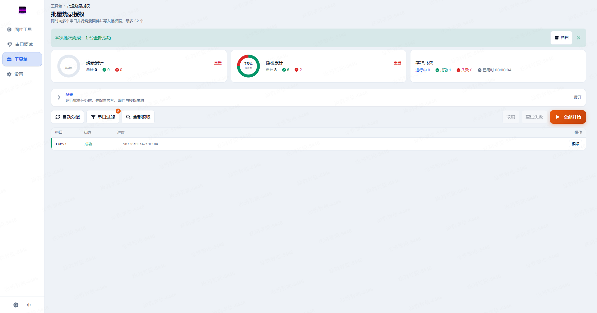
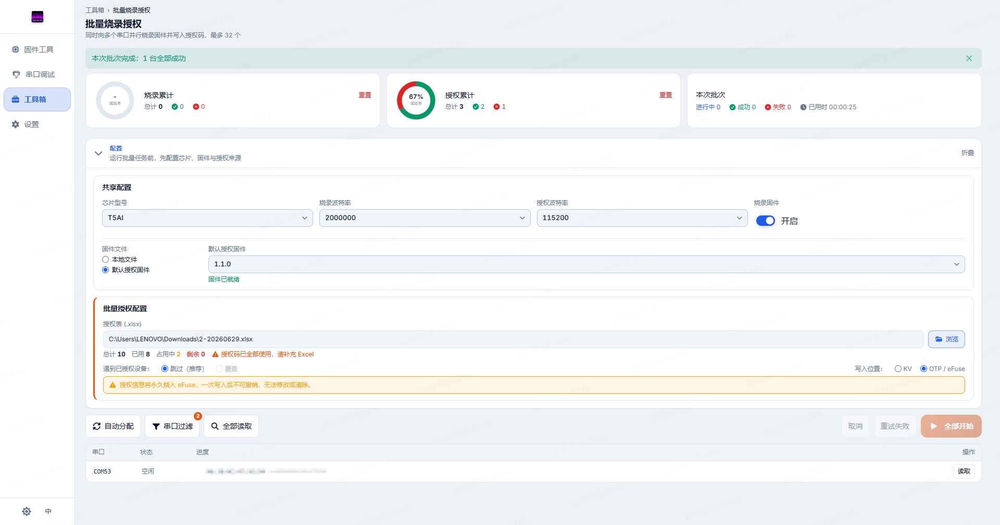

Batch Auth · Operator Guide
This page is for operators using tyutool to batch flash and authorize, organized as a follow-along workflow. No technical background required.
1. What this tool does
It processes many devices at once: plug multiple devices into your computer's serial ports, click "Start All", and tyutool simultaneously flashes firmware and writes the credentials each device needs to connect to the cloud. You never type the credentials by hand — they're read row-by-row from an Excel spreadsheet.

2. Pre-flight checklist
Confirm every row in this table before you start:
| Item | Ready when… |
|---|---|
| Desktop tyutool app | Installed. Downloads below; after installing, keep it current via the in-app "Check for updates". |
Auth-code Excel sheet (.xlsx) | Has at least a UUID and an AuthKey column (names are case-insensitive); tyutool fills in the rest. Credentials are purchased from Tuya: tuyaopen.ai/pricing. |
| Devices + serial cables | One USB-to-serial cable per device; each device occupies one serial port. |
| Serial drivers | USB-to-serial chip driver installed (CH340 / CP2102 / FT232, etc.) and the computer can see the ports. |
| Firmware file (only if flashing) | Prepare the .bin per the handoff sheet, or use tyutool's built-in "default auth firmware" download. |
| OS | Installer (v3.2.2; check GitHub Releases for newer versions) |
|---|---|
| Windows (x64) | tyutool-gui_windows_x86_64_nsis_3.2.2.exe |
| macOS (Universal) | tyutool-gui_macos_universal_dmg_3.2.2.dmg |
| Linux (x64) | tyutool-gui_linux_x86_64_appimage_3.2.2.AppImage (chmod +x after download, then run) |
Align with the firmware developer: the config handoff sheet
Every setting used in the batch should be specified by the firmware developer and verified by the operator against the sheet — never guessed. Copy this table into your ticket or chat, have the developer fill it in, and check it row by row before starting:
| Setting | Firmware developer fills in | Operator verifies |
|---|---|---|
| Chip | Target chip (e.g. esp32 / t5ai; other for auth-only) | The "chip" selection on the batch page matches |
| Operation mode | Auth-only or flash-then-auth (path A / path B on the developer page) | "Flash firmware" switch: auth-only = off, flash-then-auth = on |
| Firmware file & version | File name + version; note the official auth-firmware version if used | The selected firmware name/version matches (the archived batch-summary.json records the SHA-256 for later checks) |
| Flash baud rate | Recommended value (per chip) | Matches; confirm with the developer before lowering it |
| Auth baud rate | The firmware shell's baud (usually 115200) | Matches |
| Storage mode | KV or OTP (T5AI only; OTP must be flagged prominently) | Matches; OTP requires a single-device validation first (see safety rules) |
| Conflict policy | Skip / Overwrite (OTP forces Skip) | Matches |
| Auth sheet | Which Excel file, expected batch size | Right file selected; "remaining" ≥ the number of new devices in the batch (recovering/retrying recorded devices consumes no new codes) |
| Wiring | Where the flash/auth port is (T5: never the log port) | Wired as described |
| MAC uniqueness | Confirm every device carries a globally unique, non-repeating MAC, and note at which production step MACs are personalized | Acknowledged: tyutool does not check MACs for conflicts across devices. Auth codes are bound to MACs — duplicate MACs make different devices share the same auth code, and those devices cannot be recognized correctly on the Tuya platform |
| Single-device pass | Passed the firmware self-test checklist by hand | Run one device end-to-end on the production setup, then a small trial batch |
| Special notes | Default-MAC handling, power requirements, other gotchas | Acknowledged item by item |
3. The workflow
Open tyutool and go to Toolbox → Batch Flash & Auth in the left navigation.
Phase one · Configure (expand the Config panel at the top)
- ① Pick the chip: e.g.
ESP32,T5AI;otherfor auth-only without flashing. - ② Set the flash baud rate.
- ③ Set the auth baud rate: leave the default if unsure.
- ④ Whether to flash firmware: when on, each device is flashed first, then authorized.
- ⑤ Firmware file: local file / default auth firmware — pick one.
- ⑥ Local file: pick the firmware path; default auth firmware: pick a version (latest recommended) — "firmware ready" appears once the download completes.

- ① Pick the auth sheet (
.xlsx). - ② Check that the sheet's code stats look as expected: Total / Used / Occupied / Remaining. New devices need "Remaining" > 0; recovery/retry of recorded devices can start at 0 (tyutool matches each device back to its own row by MAC).
- ③ Decide what to do with devices that already carry auth: Skip (recommended) or Overwrite.
(T5AI only) Pick the storage mode: when the chip is T5AI, a "storage mode" option appears in the batch auth config (the screenshot above shows ESP32, which has none). KV is rewritable; OTP is write-once and irreversible — read the safety rules first.
Phase two · Wire up & start
done → only then commit the full batch. A few extra minutes up front saves reworking an entire batch.
Connect the devices (one serial port per device; T5/T5AI: wire to the flash/auth port), then it's just two steps:
- Click ① Auto-assign: scan and add every available serial port as a slot, one row per port in "idle" state.
- Click ⑥ Start All: begins the batch; with many idle ports (> 8) a confirmation dialog appears first to prevent accidental launches.
OTP — did you validate the full flow on a single device first?

Phase three · Wait & verify
- Watch the dashboard: cumulative flash/auth stats and the current batch progress update in real time; a completion banner appears at the end (all-success / all-failed / partial / all-skipped).
- Verify row by row: one row per port; judge each by its status badge (see the next section). For failures, click the error for details and retry.
- Archive (when the job is done): after the whole auth sheet's task has finished, click "Archive" on the completion banner to export everything in one step; intermediate rounds of a multi-round job don't need archiving (see the archive section).

4. Reading the results
Each port occupies one row showing: a colored status badge, a progress bar during the flash phase, the MAC / UUID once read, and an error message on failure (click for details and copy). One table is all you need:
| Status | What it means | What to do |
|---|---|---|
done | Flashed and authorized successfully. | Good unit — moves on. |
failed | A step errored. | Click the error for details; you can retry. |
skipped | Device already had auth; skipped per your policy. | Confirm that's what you intended. |
no_code | This is a new device (no row in the sheet) and "remaining" is 0, so no code could be assigned. | Re-run this device with a sheet that has "remaining" codes; devices already recorded in the sheet are unaffected. |
| Others (processing) | "reading / flashing / authorizing" etc. | Still running — wait for it to finish. |
Archive when the job is done
Two terms, to avoid ambiguity: one click of "Start All" is a round; the whole production task tied to one auth sheet is a job (a job usually spans many rounds — e.g. 4 ports × 250 rounds = 1000 devices). Archiving is per job: one auth sheet = one archive folder, created once when the job finishes (or before switching to another sheet) — the number of rounds doesn't matter, because every device's status, MAC and timestamp are written back into the sheet as you go; the Excel copy is the complete ledger.
batch-archive_20260717-143205_esp32/) containing the auth-sheet copy (the full ledger), the firmware file (with its SHA-256), a logs.zip, batch-summary.json (config, environment, stats) and batch-slots.csv. Note: the lastRun section and the csv are only a snapshot of the final round — the Excel copy is always the authority for the full job.
Why it matters: auth codes are paid for — this archive is your "which device got which code" ledger, and shipping traceability and after-sales lookups depend on it. After clicking "Archive", the folder contains:
| Archive content | Purpose |
|---|---|
| Auth-sheet Excel copy | The full ledger: every device's status, MAC and timestamp for the job. Don't hand-edit it after archiving. |
| Firmware file | Answers "exactly which firmware was flashed"; its SHA-256 is recorded in batch-summary.json. |
| logs.zip | All logs from this session — the raw evidence for troubleshooting. |
| batch-summary.json | The full config at the time (chip / baud rates / firmware / policy / storage mode), environment (version / OS), stats and the final round's detail. |
| batch-slots.csv | Per-port results and error messages of the final round; opens directly in Excel. |
| Completion-banner screenshot | The job's report card at a glance. |
5. Quick fixes
Find your symptom, apply the fix:
| Symptom | Fix |
|---|---|
| App won't open / blank window | Installation issues: Linux blank window, see FAQ · Linux blank window; macOS "developer cannot be verified", see FAQ · Gatekeeper block. |
| Port doesn't appear / won't open | Try another USB cable or USB port; make sure the driver is installed; close other programs holding the serial port (serial-debug tools, Arduino IDE, etc.). More in FAQ · Ports & connection. |
| All failures / lots of failures | Get a single device working first, then commit the batch; lower the baud to 115200; check USB power, use external power if needed. |
| Excel says "file locked" | Close Excel / WPS first, then reselect the sheet (tyutool locks the file during a batch run to prevent conflicts). |
| Excel says the sheet is invalid | Check the sheet has UUID and AuthKey columns with the correct lengths. |
| Need detailed logs / reporting an issue | First save the evidence per the checklist below; to export logs see FAQ · How to report a bug. |
Before reporting: preserve the scene
The fastest way: while the scene is still intact, click "Archive" on the completion banner — error details, logs, the auth-sheet copy, and config/environment info are all saved in one go (see the archive section; a single error's full text can also be copied via the failed row's error → details → copy). Beyond the archive, only three things need doing by hand:
- A UI screenshot: the port list with the failed rows, showing port names, status badges and which step it stopped at. Mask the AuthKey — the UUID can stay, it's how you match the row.
- The affected devices themselves: label them and set them aside — don't mix them back with good units, especially any showing the danger badge (see Safety rules).
- A one-line description: when it happened, at which step, from which device onward; if you use an external USB-serial adapter, note its chip (CH340 / CP2102, etc.).
6. Safety rules
Batch authorization is the only feature in tyutool that performs irreversible hardware operations. Two iron rules:
OTP storage mode (T5AI only), credentials are burned into the chip once and can never be erased or modified. One wrong setting (wrong chip, wrong firmware, wrong codes) ruins the whole batch. So: before using OTP, run the full flow end-to-end on a single device to validate it; only commit the whole batch once confirmed correct.

OTP storage mode shows an explicit warning that the write cannot be undone. Always validate on a single device first.